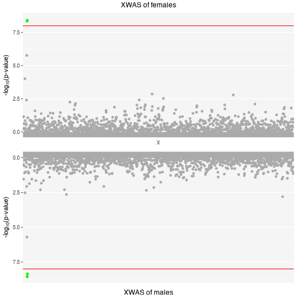
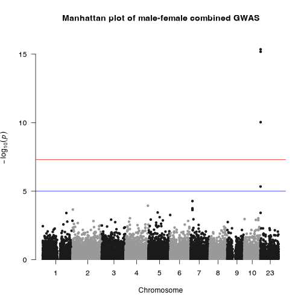
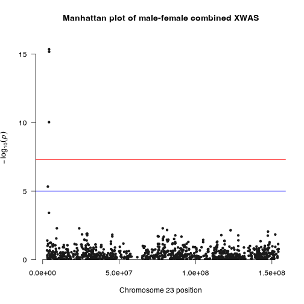
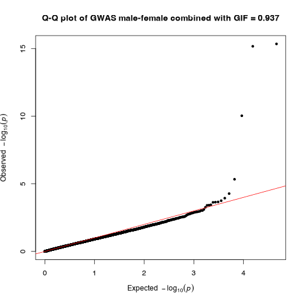
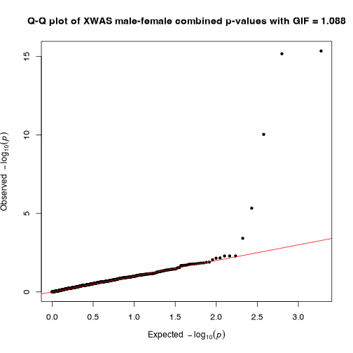

Running GWAS, XWAS and Sex-differential tests Using GXwasR
Banabithi Bose
Northwestern UniversityUniversity of Colorado Anschutz Medical Campusbanabithi.bose@gmail.com
8 August 2025
Source:vignettes/gwas_models.Rmd
gwas_models.RmdIntroduction
This document contains an example of running a GWAS with XWAS model and Sex-differential tests.
Users must perform pre-imputation and post-imputation quality control (QC) on genotype dataset and then proceed with this tutorial in actual scenario. Please follow the detailed QC-ed steps provided in: GXwasR_Preimputation and GXwasR_Postimputation.
Example Datasets
The PLINK bed, bim, and fam files are the three mandatory files representing a genotype dataset to run this tutorial. To know about these file extensions, please check https://www.cog-genomics.org/plink/1.9/formats.
GXwasR_example:
GXwasR_example.bed
GXwasR_example.bim
GXwasR_example.fam
These plink files contain genotypes for 276 individuals (males and females) simulated from 1000Genome from European decent with 26515 variants across twelve chromosomes (1-10,23,24). This dataset contains 125 males, 151 females, 108 cases and 168 controls. We will utilize this set of plink files as proxy of pre-imputated genotype data.
Learn about all the GXwasR functions
browseVignettes("GXwasR")Example Dataset Summary
Dataset: GXwasR_example
DataDir <- GXwasR:::GXwasR_data()
ResultDir <- tempdir()
finput <- "GXwasR_example"
x <- PlinkSummary(DataDir, ResultDir, finput)
#> ℹ Dataset: GXwasR_example
#> ℹ Number of missing phenotypes: 0
#> ℹ Number of males: 125
#> ℹ Number of females: 151
#> ℹ This is case-control data
#> ℹ Number of cases: 108
#> ℹ Number of controls: 168
#> ℹ Number of cases in males: 53
#> ℹ Number of controls in males: 72
#> ℹ Number of cases in females: 55
#> ℹ Number of controls in females: 96
#> ℹ Number of chromosomes: 12
#> - Chr: 1
#> - Chr: 2
#> - Chr: 3
#> - Chr: 4
#> - Chr: 5
#> - Chr: 6
#> - Chr: 7
#> - Chr: 8
#> - Chr: 9
#> - Chr: 10
#> - Chr: 23
#> - Chr: 24
#> ℹ Total number of SNPs: 26527
#> ℹ Total number of samples: 276Sex-combined and sex-stratified GWAS with XWAS
Function: GXwas()
help(GXwas, package = GXwasR)
#> GXwas: Running genome-wide association study (GWAS) and
#> X-chromosome-wide association study (XWAS) models.
#>
#> Description:
#>
#> This function runs GWAS models in autosomes with several
#> alternative XWAS models. Models such as
#> "FMcombx01","FMcombx02",and "FMstratified" can be applied to both
#> binary and quantitative traits, while "GWAcxci" can only be
#> applied to a binary trait.
#>
#> For binary and quantitative features, this function uses logistic
#> and linear regression, allowing for multiple covariates and the
#> interactions with those covariates in a multiple-regression
#> approach. These models are all run using the additive effects of
#> SNPs, and each additional minor allele's influence is represented
#> by the direction of the regression coefficient.
#>
#> This function attempts to identify the multi-collinearity among
#> predictors by displaying NA for the test statistic and a p-value
#> for all terms in the model. The more terms you add, the more
#> likely you are to run into issues.
#>
#> For details about the different XWAS model, please follow the
#> associated publication.
#>
#> Usage:
#>
#> GXwas(
#> DataDir,
#> ResultDir,
#> finput,
#> trait = c("binary", "quantitative"),
#> standard_beta = TRUE,
#> xmodel = c("FMcombx01", "FMcombx02", "FMstratified", "GWAScxci"),
#> sex = FALSE,
#> xsex = FALSE,
#> covarfile = NULL,
#> interaction = FALSE,
#> covartest = c("ALL"),
#> Inphenocov = c("ALL"),
#> combtest = c("fisher.method", "fisher.method.perm", "stouffer.method"),
#> MF.zero.sub = 1e-05,
#> B = 10000,
#> MF.mc.cores = 1,
#> MF.na.rm = FALSE,
#> MF.p.corr = "none",
#> plot.jpeg = FALSE,
#> plotname = "GXwas.plot",
#> snp_pval = 1e-08,
#> annotateTopSnp = FALSE,
#> suggestiveline = 5,
#> genomewideline = 7.3,
#> ncores = 0
#> )
#>
#> Arguments:
#>
#> DataDir: Character string for the file path of the input PLINK binary
#> files.
#>
#> ResultDir: Character string for the folder path where the outputs will
#> be saved.
#>
#> finput: Character string, specifying the prefix of the input PLINK
#> binary files with both male and female samples. This file
#> needs to be in 'DataDir'.
#>
#> Note: Case/control phenotypes are expected to be encoded as
#> 1=unaffected (control), 2=affected (case); 0 is accepted as
#> an alternate missing value encoding. The missing case/control
#> or quantitative phenotypes are expected to be encoded as
#> 'NA'/'nan' (any capitalization) or -9.
#>
#> trait: Boolean value, 'binary' or 'quantitative' for the phenotype
#> i.e. the trait.
#>
#> standard_beta: Boolean value, 'TRUE' or 'FALSE' in case of quantitative
#> trait for standardizing the trait or phenotype values (mean
#> 0, unit variance), so the resulting coefficients will be
#> standardized. The default is 'TRUE'.
#>
#> xmodel: Models "FMcombx01","FMcombx02",and "FMstratified" can be
#> chosen for both binary and quantitative traits while
#> "GWAcxci" can only apply to the binary trait. These models
#> take care of the X-chromosomal marker. Three female genotypes
#> are coded by 0, 1, and 2 in FM01 and FM02. The two genotypes
#> of males that follow the X-chromosome inactivation (XCI)
#> pattern as random (XCI-R) in the FM01 model are coded by 0
#> and 1, while the two genotypes that follow the XCI is escaped
#> (XCI-E) in the FM02 model are coded by 0 and 1. To reflect
#> the dose compensation connection between the sexes, FM02
#> treats men as homozygous females.
#>
#> In the "FMstratified" associations are tested separately for
#> males and females, and then the combined p values are
#> computed the Fisher's method, Fisher's method with
#> permutation, or Stouffer's method(1,3-7]. An X-chromosome
#> inactivation (XCI) pattern, or coding technique for
#> X-chromosomal genotypes between sexes, is not required for
#> the XCGA. By simultaneously accounting for four distinct XCI
#> patterns, namely XCI-R, XCI-E, XCI-SN (XCI fully toward
#> normal allele), and XCI-SR (XCI fully toward risk allele),
#> this model may maintain a respectably high power (Su et al.
#> 2022).
#>
#> Note: 'sex' shouldn't be provided as a covariate in the XCGA
#> model.
#>
#> sex: Boolean value, 'TRUE' or 'FALSE' for using sex as covariate
#> in association test. It is applicable genome-wide.
#>
#> The default is FALSE.
#>
#> xsex: Boolean value, 'TRUE' or 'FALSE' for using sex as covariate
#> in association test for X-chromosomal SNPs. The default is
#> FALSE. This will overwrite 'sex' argument for X-chromosome.
#>
#> covarfile: Character string for the full name of the covariate file in
#> .txt format. This file should be placed in 'DataDir'.
#>
#> Note about the covariate file: The first column of this file
#> should be 'FID', the second column should be 'IID' and the
#> other columns should be covariates. The primary header line
#> should be there starting with “FID”, and “IID” followed by
#> covariate names. If an individual is not present in the
#> covariate file, or if the individual has a missing phenotype
#> value (i.e. -9 by default) for the covariate, then that
#> individual is set to missing (i.e. will be excluded from
#> association analysis). It is important to note that for
#> stratified GWAS model, if PCs are included as covar then it
#> should be generated separately for each cohort and then
#> included in the covarfile. Use the function 'DummyCovar' to
#> generate a new covariate file with categorical variables
#> down-coded as binary dummy variables for the covariate file
#> with categorical variables. For instance, if a variable has K
#> categories, K-1 new dummy variables are constructed, and the
#> original covariate is now estimated with a coefficient for
#> each category.
#>
#> interaction: Boolean value, 'TRUE' or 'FALSE' for including SNP x
#> covariate interaction term/terms from the association
#> analysis. The default is 'FALSE'. If a permutation procedure
#> is chosen then the interaction will be automatically 'FALSE'.
#> For the interaction with the two covariates COV1 and COV2,
#> the model will look like: Y = b0 + b1.ADD + b2.COV1 + b3.COV2
#> + b4.ADD x COV1 + b5.ADD x COV2 + e. When interaction factors
#> are incorporated into the model, the main effects'
#> significance is not always determined simply; rather, it
#> depends on the arbitrary coding of the variables. To put it
#> another way, you should probably just interpret the p-value
#> for the interaction. Also, The p-values for the covariates do
#> not represent the test for the SNP-phenotype association
#> after controlling for the covariate. That is the first row
#> (ADD). Rather, the covariate term is the test associated with
#> the covariate-phenotype association. These p-values might be
#> extremely significant (e.g. if one covaries for smoking in an
#> analysis of heart disease, etc) but this does not mean that
#> the SNP has a highly significant effect necessarily. Note
#> that, this feature is not valid for XCGA model for XWAS part.
#>
#> covartest: Vector value with 'NULL',"ALL" or covariate name/names to be
#> included in the test. The default is 'NULL.' For instance,
#> the user can choose “AGE” and “SEX” as covartest = c(“AGE”,
#> “SEX”) or all the covariates as covartest = c(“ALL”).
#>
#> Inphenocov: Vector of integer values starting from 1 to extract the
#> terms which user wants from the above model: Y = b0 + b1.ADD
#> + b2.COV1 + b3.COV2 + b4.ADDxCOV1 + b5.ADDxCOV2 + e. The
#> terms will appear in order as (Purcell et al. 2007) for ADD,
#> (Su et al. 2022) for COV1, (Rhodes 2002) for ADD x COV1, and
#> (Moreau and others 2003) for ADD x COV2. If the user wants to
#> extract the terms for COV1 and ADD x COV1, they need to
#> specify it as c(2,4). The default is c(“ALL”).
#>
#> Note: This feature is not valid for the XCGA model for the
#> XWAS part.
#>
#> combtest: Character vector specifying method for combining p-values
#> after stratified GWAS/XWAS models. Choices are
#> “stouffer.method”, "fisher.method" and "fisher.method.perm".
#> For fisher.method the function for combining p-values uses a
#> statistic, S = -2 ∑^k /log p, which follows a χ^2
#> distribution with 2k degrees of freedom (Fisher 1925).
#>
#> For fisher.method.perm, using p-values from stratified tests,
#> the summary statistic for combining p-values is S = -2 ∑ /log
#> p. A p-value for this statistic can be derived by randomly
#> generating summary statistics (Rhodes 2002). Therefore, a
#> p-value is randomly sampled from each contributing study, and
#> a random statistic is calculated. The fraction of random
#> statistics greater or equal to S then gives the final
#> p-value.
#>
#> For stouffer.method ,the function applies Stouffer’s method
#> (Stouffer et al. 1949) to the p-values assuming that the
#> p-values to be combined are independent. Letting p1, p2, . .
#> . , pk denote the individual (one- or two-sided) p-values of
#> the k hypothesis tests to be combined, the test statistic is
#> then computed with $z = ∑^k_{1}frac{z_{i}}{sqrt(k)}$ where
#> $z_{i}$ = Φ−1 (1 – $p_{i}$) and Φ −1 (·) denotes the inverse
#> of the cumulative distribution function of a standard normal
#> distribution. Under the joint null hypothesis, the test
#> statistic follows a standard normal distribution which is
#> used to compute the combined p-value. This functionality is
#> taken from the R package poolr (Cinar and Viechtbauer 2022).
#>
#> Note that only p-values between 0 and 1 are allowed to be
#> passed to these methods.
#>
#> Note: Though this parameter is enabled for both autosome GWAS
#> and XWAS, the combining pvalue after sex-stratified test is
#> recommended to ChrX only.
#>
#> MF.zero.sub: Small numeric value for substituting p-values of 0 in in
#> stratified GWAS with FM01comb and FM02comb XWAS models. The
#> default is 0.00001. As log(0) results in Inf this replaces
#> p-values of 0 by default with a small float.
#>
#> B: Integer value specifying the number of permutation in case of
#> using fisher.method.perm method in stratified GWAS with
#> FM01comb and FM02comb XWAS models. The default is 10000.
#>
#> MF.mc.cores: Number of cores used for fisher.method.perm in stratified
#> GWAS with FM01comb and FM02comb XWAS models.
#>
#> MF.na.rm: Boolean value, 'TRUE' or 'FALSE' for removing p-values of NA
#> in stratified GWAS with FM01comb and FM02comb XWAS in case of
#> using Fisher’s and Stouffer’s methods. The default is FALSE.
#>
#> MF.p.corr: Character vector specifying method for correcting the
#> summary p-values for FMfcomb and FMscomb models. Choices are
#> "bonferroni", "BH" and "none" for Bonferroni,
#> Benjamini-Hochberg and none, respectively. The default is
#> "none".
#>
#> plot.jpeg: Boolean value, 'TRUE' or 'FALSE' for saving the plots in
#> .jpeg file. The default is TRUE.
#>
#> plotname: A character string specifying the prefix of the file for
#> plots. This file will be saved in DataDir. The default is
#> "GXwas.plot".
#>
#> snp_pval: Numeric value as p-value threshold for annotation. SNPs below
#> this p-value will be annotated on the plot. The default is
#> 1e-08.
#>
#> annotateTopSnp: Boolean value, 'TRUE' or 'FALSE. If TRUE, it only
#> annotates the top hit on each chromosome that is below the
#> snp_pval threshold. The default is FALSE.
#>
#> suggestiveline: The default is 5 (for p-value 1e-05).
#>
#> genomewideline: The default is 7.3 (for p-value 5e-08).
#>
#> ncores: Integer value, specifying the number of cores for parallel
#> processing. The default is 0 (no parallel computation).
#>
#> Value:
#>
#> A dataframe with GWAS (with XWAS for X-chromosomal variants) along
#> with Manhattan and Q-Q plots. In the case of the stratified test,
#> the return is a list containing three dataframes, namely, FWAS,
#> MWAS, and MFWAS with association results in only female, only
#> male, and both cohorts, respectively. This will be accompanied by
#> Miami and Q-Q plots. The individual manhattan and Q-Q-plots for
#> stratified tests prefixed with xmodel type will be in the DataDir.
#>
#> Author(s):
#>
#> Banabithi Bose
#>
#> References:
#>
#> Cinar O, Viechtbauer W (2022). "The poolr package for combining
#> independent and dependent p values." _Journal of Statistical
#> Software_, *101*(1), 1-42. doi:10.18637/jss.v101.i01
#> <https://doi.org/10.18637/jss.v101.i01>.
#>
#> Fisher RA (1925). _Statistical Methods for Research Workers_.
#> Oliver and Boyd, Edinburgh.
#>
#> Moreau Y, others (2003). "Comparison and meta-analysis of
#> microarray data: from the bench to the computer desk." _Trends in
#> Genetics_, *19*(10), 570-577.
#>
#> Purcell S, Neale B, Todd-Brown K, Thomas L, Ferreira MAR, Bender
#> D, Maller J, Sklar P, de Bakker PIW, Daly MJ, others (2007).
#> "PLINK: A Tool Set for Whole-Genome Association and
#> Population-Based Linkage Analyses." _The American Journal of Human
#> Genetics_, *81*(3), 559-575. doi:10.1086/519795
#> <https://doi.org/10.1086/519795>.
#>
#> Rhodes DR (2002). "Meta-analysis of microarrays: interstudy
#> validation of gene expression profiles reveals pathway
#> dysregulation in prostate cancer." _Cancer Research_, *62*(15),
#> 4427-4433.
#>
#> Stouffer SA, Suchman EA, DeVinney LC, Star SA, Williams RM (1949).
#> _The American Soldier: Adjustment During Army Life_, volume 1.
#> Princeton University Press, Princeton, NJ.
#>
#> Su Y, Hu J, Yin P, Jiang H, Chen S, Dai M, Chen Z, Wang P (2022).
#> "XCMAX4: A Robust X Chromosomal Genetic Association Test
#> Accounting for Covariates." _Genes (Basel)_, *13*(5), 847.
#> doi:10.3390/genes13050847 <https://doi.org/10.3390/genes13050847>,
#> <http://www.ncbi.nlm.nih.gov/pubmed/35627231>.
#>
#> Examples:
#>
#> DataDir <- GXwasR:::GXwasR_data()
#> ResultDir <- tempdir()
#> finput <- "GXwasR_example"
#> standard_beta <- TRUE
#> xsex <- FALSE
#> sex <- TRUE
#> Inphenocov <- NULL
#> covartest <- NULL
#> interaction <- FALSE
#> MF.na.rm <- FALSE
#> B <- 10000
#> MF.zero.sub <- 0.00001
#> trait <- "binary"
#> xmodel <- "FMcombx02"
#> combtest <- "fisher.method"
#> snp_pval <- 1e-08
#> covarfile <- NULL
#> ncores <- 0
#> MF.mc.cores <- 1
#> ResultGXwas <- GXwas(
#> DataDir = DataDir, ResultDir = ResultDir,
#> finput = finput, xmodel = xmodel, trait = trait, covarfile = covarfile,
#> sex = sex, xsex = xsex, combtest = combtest, MF.p.corr = "none",
#> snp_pval = snp_pval, plot.jpeg = TRUE, suggestiveline = 5, genomewideline = 7.3,
#> MF.mc.cores = 1, ncores = ncores
#> )Running GXwas
## Running
DataDir <- GXwasR:::GXwasR_data()
ResultDir <- tempdir()
finput <- "GXwasR_example"
standard_beta <- TRUE
xsex <- FALSE
sex <- TRUE
Inphenocov <- NULL
covartest <- NULL
interaction <- FALSE
MF.na.rm <- FALSE
B <- 10000
MF.zero.sub <- 0.00001
trait <- "binary"
xmodel <- "FMstratified"
combtest <- "fisher.method"
snp_pval <- 1e-08
covarfile <- NULL
ncores <- 0
plot.jpeg <- FALSE
MF.mc.cores <- 1
genomewideline <- 7.3
suggestiveline <- 5
plotname <- "GXwas.plot"
annotateTopSnp <- FALSE
MF.na.rm <- FALSE
B <- 10000
MF.zero.sub <- 0.00001
MF.p.corr <- "none"
plotname <- "GXwas.plot"
ResultGXwas <- GXwas(DataDir = DataDir, ResultDir = ResultDir, finput = finput, xmodel = xmodel, trait = trait, covarfile = covarfile, sex = sex, xsex = xsex, combtest = combtest, MF.p.corr = "none", snp_pval = snp_pval, plot.jpeg = plot.jpeg, suggestiveline = 5, genomewideline = 7.3, MF.mc.cores = 1, ncores = ncores)
#> • Running FMstratified model
#> • Stratified test is running for females
#> • Stratified test is running for males
#> ℹ If you want parallel computation, please provide non-zero value for argument ncores.
#> ℹ Plots are initiated.
#> ℹ Saving plot to /var/folders/d6/gtwl3_017sj4pp14fbfcbqjh0000gp/T//RtmpcRh9ZZ/Stratified_GWAS.png#> ℹ Saving plot to /var/folders/d6/gtwl3_017sj4pp14fbfcbqjh0000gp/T//RtmpcRh9ZZ/Stratified_XWAS.png
#> Three data frames have been created and saved:
#> • CombinedWAS
#> • MaleWAS
#> • FemaleWAS
#> ℹ You can find them in the directory: /var/folders/d6/gtwl3_017sj4pp14fbfcbqjh0000gp/T//RtmpcRh9ZZ
# Outputs
knitr::kable(ResultGXwas$CombinedWAS[1:5, ], caption = "Dataframe containing the result of stratified model")| SNP | CHR | BP | P |
|---|---|---|---|
| rs10000405 | 4 | 47716881 | 0.9768464 |
| rs10000452 | 4 | 63234460 | 0.6969710 |
| rs10000465 | 4 | 120835814 | 0.5378310 |
| rs10000605 | 4 | 13875675 | 0.7221672 |
| rs10000675 | 4 | 121520624 | 0.8246220 |
knitr::kable(ResultGXwas$MaleWAS[1:5, ], caption = "Stratified GWAS result with male cohort.")| CHR | SNP | BP | A1 | TEST | NMISS | BETA | SE | L95 | U95 | STAT | P |
|---|---|---|---|---|---|---|---|---|---|---|---|
| 1 | rs143773730 | 73841 | T | ADD | 125 | -0.0789 | 0.2643 | -0.5968 | 0.4390 | -0.2986 | 0.76530 |
| 1 | rs147281566 | 775125 | T | ADD | 125 | -0.3959 | 1.2380 | -2.8230 | 2.0310 | -0.3197 | 0.74920 |
| 1 | rs35854196 | 863863 | A | ADD | 125 | 1.0500 | 0.8858 | -0.6864 | 2.7860 | 1.1850 | 0.23600 |
| 1 | rs12041521 | 1109154 | A | ADD | 125 | -0.4451 | 0.3387 | -1.1090 | 0.2188 | -1.3140 | 0.18890 |
| 1 | rs148527527 | 1127860 | G | ADD | 125 | 1.6770 | 0.6864 | 0.3317 | 3.0220 | 2.4430 | 0.01456 |
knitr::kable(ResultGXwas$FemaleWAS[1:5, ], caption = "Stratified GWAS result with female cohort.")| CHR | SNP | BP | A1 | TEST | NMISS | BETA | SE | L95 | U95 | STAT | P |
|---|---|---|---|---|---|---|---|---|---|---|---|
| 1 | rs143773730 | 73841 | T | ADD | 151 | 0.3459 | 0.2818 | -0.2064 | 0.89820 | 1.2270 | 0.21970 |
| 1 | rs147281566 | 775125 | T | ADD | 151 | 0.1568 | 0.9290 | -1.6640 | 1.97800 | 0.1688 | 0.86590 |
| 1 | rs35854196 | 863863 | A | ADD | 151 | -0.1446 | 0.7282 | -1.5720 | 1.28300 | -0.1985 | 0.84260 |
| 1 | rs115490086 | 928969 | T | ADD | 151 | 0.5649 | 1.4240 | -2.2270 | 3.35700 | 0.3966 | 0.69170 |
| 1 | rs12041521 | 1109154 | A | ADD | 151 | -0.6697 | 0.3314 | -1.3190 | -0.02008 | -2.0210 | 0.04332 |
## Top ten associations in female-specific study:
load("FemaleWAS.Rda")
x1 <- FemaleWAS
x2 <- x1[x1$TEST == "ADD", ]
x3 <- x2[order(x2$P), ]
x <- x3[1:10, -c(5:6)]
## Top ten associations in male-specific study:
load("MaleWAS.Rda")
x1 <- MaleWAS
x2 <- x1[x1$TEST == "ADD", ]
x3 <- x2[order(x2$P), ]
x <- x3[1:10, -c(5:6)]
## Top ten associations in FM02comb model:
load("CombinedWAS.Rda")
x1 <- CombinedWAS
x2 <- x1[order(x1$P), ]
x <- x2[1:10, ]To know more about the function GXwas() to run different GWAS and XWAS models with different arguments, please follow this tutorial: https://boseb.github.io/GXwasR/articles/GXwasR_overview.html
Performing sex-differential test
Now, we will perform a sex-differential test:
Function: SexDiff()
help(SexDiff, package = GXwasR)
#> SexDiff: Sex difference in effect size for each SNP using t-test.
#>
#> Description:
#>
#> This function uses the GWAS summary statistics from sex-stratified
#> tests like "FMstratified", to evaluate the difference in effect
#> size between males and females at each SNP using a t-test.
#>
#> The input dataframes should only include X-chromosome in order to
#> obtain results for sex differences based solely on X-linked loci.
#>
#> Usage:
#>
#> SexDiff(Mfile, Ffile)
#>
#> Arguments:
#>
#> Mfile: R dataframe of summary statistics of GWAS or XWAS of male
#> samples with six mandatory columns,
#> SNP(Variant),CHR(Chromosome number), BP(Base pair
#> position),A1(Minor allele),BETA_M(Effect size) and
#> SE_M(Standard error). This can be generated by running
#> FM01comb or "FMstratified" model with GXWAS function.
#>
#> Ffile: R dataframe of summary statistics of GWAS or XWAS of male
#> samples with six mandatory columns,
#> SNP(Variant),CHR(Chromosome number), BP(Base pair
#> position),A1(Minor allele),BETA_F(Effect size) and
#> SE_F(Standard error). This can be generated by running
#> FM01comb or "FMstratified" model with GXWAS function.
#>
#> Value:
#>
#> R dataframe with seven columns:
#>
#> • 'SNP' (Variant)
#>
#> • 'CHR' (Chromosome number)
#>
#> • 'BP' (Base pair position)
#>
#> • 'A1' (Minor allele)
#>
#> • 'tstat' (t-statistics for effect-size test)
#>
#> • 'P' (p-value) and
#>
#> • 'adjP' (Bonferroni corrected p-value)
#>
#> Author(s):
#>
#> Banabithi Bose
#>
#> Examples:
#>
#> data("Mfile", package = "GXwasR")
#> data("Ffile", package = "GXwasR")
#> Difftest <- SexDiff(Mfile, Ffile)
#> significant_snps <- Difftest[Difftest$adjP < 0.05, ]Running SexDiff
## Running
## Running the function
x1 <- MaleWAS
x1 <- x1[x1$TEST == "ADD", ]
x1 <- x1[, c(1:4, 7:8)]
colnames(x1) <- c("CHR", "SNP", "BP", "A1", "BETA_M", "SE_M")
x2 <- FemaleWAS
x2 <- x2[x2$TEST == "ADD", ]
x2 <- x2[, c(1:4, 7:8)]
colnames(x2) <- c("CHR", "SNP", "BP", "A1", "BETA_F", "SE_F")
Difftest <- SexDiff(Mfile = x1, Ffile = x2)
## Significant SNPs with sex-differential effect
sig.snps <- Difftest[Difftest$adjP < 0.05, ]
colnames(sig.snps) <- c("SNP", "CHR", "BP", "A1", "T_statistic", "Pvalue", "Adjusted_Pvalue")
knitr::kable(sig.snps, caption = "SNPs with significant sex-differential effect.")| SNP | CHR | BP | A1 | T_statistic | Pvalue | Adjusted_Pvalue |
|---|
Citing GXwasR
We hope that GXwasR will be useful for your research. Please use the following information to cite the package and the overall approach. Thank you!
## Citation info
citation("GXwasR")
#> To cite package 'GXwasR' in publications use:
#>
#> Bose B, Blostein F, Kim J, Winters J, Actkins KV, Mayer D, Congivaram H, Niarchou M, Edwards DV, Davis
#> LK, Stranger BE (2025). "GXwasR: A Toolkit for Investigating Sex-Differentiated Genetic Effects on
#> Complex Traits." _medRxiv 2025.06.10.25329327_. doi:10.1101/2025.06.10.25329327
#> <https://doi.org/10.1101/2025.06.10.25329327>.
#>
#> A BibTeX entry for LaTeX users is
#>
#> @Article{,
#> title = {GXwasR: A Toolkit for Investigating Sex-Differentiated Genetic Effects on Complex Traits},
#> author = {Banabithi Bose and Freida Blostein and Jeewoo Kim and Jessica Winters and Ky’Era V. Actkins and David Mayer and Harrsha Congivaram and Maria Niarchou and Digna Velez Edwards and Lea K. Davis and Barbara E. Stranger},
#> journal = {medRxiv 2025.06.10.25329327},
#> year = {2025},
#> doi = {10.1101/2025.06.10.25329327},
#> }Reproducibility
The GXwasR package (Bose, Blostein, Kim et al., 2025) was made possible thanks to:
- R (R Core Team, 2025)
- BiocStyle (Oleś, 2025)
- knitr (Xie, 2025)
- RefManageR (McLean, 2017)
- rmarkdown (Allaire, Xie, Dervieux et al., 2024)
- sessioninfo (Wickham, Chang, Flight et al., 2025)
- testthat (Wickham, 2011)
This package was developed using biocthis.
R session information.
#> ─ Session info ───────────────────────────────────────────────────────────────────────────────────────────────────────
#> setting value
#> version R version 4.5.1 (2025-06-13)
#> os macOS Sequoia 15.6
#> system aarch64, darwin24.4.0
#> ui unknown
#> language (EN)
#> collate en_US.UTF-8
#> ctype en_US.UTF-8
#> tz America/New_York
#> date 2025-08-08
#> pandoc 3.6.3 @ /Applications/Positron.app/Contents/Resources/app/quarto/bin/tools/aarch64/ (via rmarkdown)
#> quarto 1.7.33 @ /usr/local/bin/quarto
#>
#> ─ Packages ───────────────────────────────────────────────────────────────────────────────────────────────────────────
#> package * version date (UTC) lib source
#> abind 1.4-8 2024-09-12 [2] CRAN (R 4.5.0)
#> backports 1.5.0 2024-05-23 [2] CRAN (R 4.5.1)
#> bibtex 0.5.1 2023-01-26 [2] CRAN (R 4.5.0)
#> bigassertr 0.1.7 2025-06-27 [2] CRAN (R 4.5.1)
#> bigparallelr 0.3.2 2021-10-02 [2] CRAN (R 4.5.0)
#> bigsnpr 1.12.18 2024-11-26 [2] CRAN (R 4.5.1)
#> bigsparser 0.7.3 2024-09-06 [2] CRAN (R 4.5.1)
#> bigstatsr 1.6.2 2025-07-29 [2] CRAN (R 4.5.1)
#> Biobase 2.68.0 2025-04-15 [2] Bioconduc~
#> BiocGenerics 0.54.0 2025-04-15 [2] Bioconduc~
#> BiocIO 1.18.0 2025-04-15 [2] Bioconduc~
#> BiocManager 1.30.26 2025-06-05 [2] CRAN (R 4.5.0)
#> BiocParallel 1.42.1 2025-06-01 [2] Bioconductor 3.21 (R 4.5.0)
#> BiocStyle 2.36.0 2025-04-15 [2] Bioconduc~
#> Biostrings 2.76.0 2025-04-15 [2] Bioconduc~
#> bit 4.6.0 2025-03-06 [2] CRAN (R 4.5.1)
#> bit64 4.6.0-1 2025-01-16 [2] CRAN (R 4.5.1)
#> bitops 1.0-9 2024-10-03 [2] CRAN (R 4.5.0)
#> brio 1.1.5 2024-04-24 [2] CRAN (R 4.5.1)
#> broom 1.0.9 2025-07-28 [2] CRAN (R 4.5.1)
#> BSgenome 1.76.0 2025-04-15 [2] Bioconduc~
#> cachem 1.1.0 2024-05-16 [2] CRAN (R 4.5.0)
#> calibrate 1.7.7 2020-06-19 [2] CRAN (R 4.5.0)
#> callr 3.7.6 2024-03-25 [2] CRAN (R 4.5.0)
#> car 3.1-3 2024-09-27 [2] CRAN (R 4.5.0)
#> carData 3.0-5 2022-01-06 [2] CRAN (R 4.5.0)
#> cli 3.6.5 2025-04-23 [2] CRAN (R 4.5.0)
#> codetools 0.2-20 2024-03-31 [4] CRAN (R 4.5.1)
#> cowplot 1.2.0 2025-07-07 [2] CRAN (R 4.5.1)
#> crayon 1.5.3 2024-06-20 [2] CRAN (R 4.5.0)
#> curl 6.4.0 2025-06-22 [2] CRAN (R 4.5.1)
#> data.table 1.17.8 2025-07-10 [2] CRAN (R 4.5.1)
#> DelayedArray 0.34.1 2025-04-17 [2] Bioconduc~
#> devtools * 2.4.5 2022-10-11 [3] CRAN (R 4.5.0)
#> digest 0.6.37 2024-08-19 [2] CRAN (R 4.5.0)
#> doParallel 1.0.17 2022-02-07 [2] CRAN (R 4.5.0)
#> doRNG 1.8.6.2 2025-04-02 [2] CRAN (R 4.5.0)
#> dplyr 1.1.4 2023-11-17 [2] CRAN (R 4.5.0)
#> ellipsis 0.3.2 2021-04-29 [3] CRAN (R 4.5.0)
#> evaluate 1.0.4 2025-06-18 [2] CRAN (R 4.5.1)
#> farver 2.1.2 2024-05-13 [2] CRAN (R 4.5.0)
#> fastmap 1.2.0 2024-05-15 [2] CRAN (R 4.5.0)
#> flock 0.7 2016-11-12 [2] CRAN (R 4.5.1)
#> foreach 1.5.2 2022-02-02 [2] CRAN (R 4.5.0)
#> Formula 1.2-5 2023-02-24 [2] CRAN (R 4.5.0)
#> fs 1.6.6 2025-04-12 [2] CRAN (R 4.5.0)
#> gdsfmt 1.44.1 2025-07-09 [2] Bioconduc~
#> generics 0.1.4 2025-05-09 [2] CRAN (R 4.5.0)
#> GenomeInfoDb 1.44.1 2025-07-23 [2] Bioconduc~
#> GenomeInfoDbData 1.2.14 2025-04-21 [2] Bioconductor
#> GenomicAlignments 1.44.0 2025-04-15 [2] Bioconduc~
#> GenomicRanges 1.60.0 2025-04-15 [2] Bioconduc~
#> ggplot2 3.5.2 2025-04-09 [2] CRAN (R 4.5.0)
#> ggpubr 0.6.1 2025-06-27 [2] CRAN (R 4.5.1)
#> ggrepel 0.9.6 2024-09-07 [2] CRAN (R 4.5.1)
#> ggsignif 0.6.4 2022-10-13 [2] CRAN (R 4.5.0)
#> glue 1.8.0 2024-09-30 [2] CRAN (R 4.5.0)
#> gridExtra 2.3 2017-09-09 [2] CRAN (R 4.5.0)
#> gtable 0.3.6 2024-10-25 [2] CRAN (R 4.5.0)
#> GXwasR * 0.99.0 2025-08-08 [1] Bioconductor
#> hms 1.1.3 2023-03-21 [2] CRAN (R 4.5.0)
#> htmltools 0.5.8.1 2024-04-04 [2] CRAN (R 4.5.0)
#> htmlwidgets 1.6.4 2023-12-06 [2] CRAN (R 4.5.0)
#> httpuv 1.6.16 2025-04-16 [2] CRAN (R 4.5.1)
#> httr 1.4.7 2023-08-15 [2] CRAN (R 4.5.0)
#> IRanges 2.42.0 2025-04-15 [2] Bioconduc~
#> iterators 1.0.14 2022-02-05 [2] CRAN (R 4.5.0)
#> jsonlite 2.0.0 2025-03-27 [2] CRAN (R 4.5.0)
#> knitr 1.50 2025-03-16 [2] CRAN (R 4.5.0)
#> labeling 0.4.3 2023-08-29 [2] CRAN (R 4.5.0)
#> later 1.4.2 2025-04-08 [2] CRAN (R 4.5.1)
#> lattice 0.22-7 2025-04-02 [4] CRAN (R 4.5.1)
#> lifecycle 1.0.4 2023-11-07 [2] CRAN (R 4.5.0)
#> lubridate 1.9.4 2024-12-08 [2] CRAN (R 4.5.1)
#> magrittr 2.0.3 2022-03-30 [2] CRAN (R 4.5.0)
#> MASS 7.3-65 2025-02-28 [4] CRAN (R 4.5.1)
#> mathjaxr 1.8-0 2025-04-30 [2] CRAN (R 4.5.1)
#> Matrix 1.7-3 2025-03-11 [4] CRAN (R 4.5.1)
#> MatrixGenerics 1.20.0 2025-04-15 [2] Bioconduc~
#> matrixStats 1.5.0 2025-01-07 [2] CRAN (R 4.5.0)
#> memoise 2.0.1 2021-11-26 [2] CRAN (R 4.5.0)
#> mime 0.13 2025-03-17 [2] CRAN (R 4.5.0)
#> miniUI 0.1.2 2025-04-17 [3] CRAN (R 4.5.0)
#> pillar 1.11.0 2025-07-04 [2] CRAN (R 4.5.1)
#> pkgbuild 1.4.8 2025-05-26 [2] CRAN (R 4.5.0)
#> pkgconfig 2.0.3 2019-09-22 [2] CRAN (R 4.5.0)
#> pkgdev 0.1.0.9060 2025-08-04 [2] Github (dieghernan/pkgdev@e56f2a8)
#> pkgload 1.4.0 2024-06-28 [2] CRAN (R 4.5.0)
#> plyr 1.8.9 2023-10-02 [2] CRAN (R 4.5.1)
#> plyranges 1.28.0 2025-04-15 [2] Bioconduc~
#> poolr 1.2-0 2025-05-07 [2] CRAN (R 4.5.0)
#> prettyunits 1.2.0 2023-09-24 [2] CRAN (R 4.5.0)
#> printr * 0.3 2023-03-08 [2] CRAN (R 4.5.0)
#> processx 3.8.6 2025-02-21 [2] CRAN (R 4.5.1)
#> profvis 0.4.0 2024-09-20 [3] CRAN (R 4.5.0)
#> progress 1.2.3 2023-12-06 [2] CRAN (R 4.5.0)
#> promises 1.3.3 2025-05-29 [2] CRAN (R 4.5.0)
#> ps 1.9.1 2025-04-12 [2] CRAN (R 4.5.1)
#> purrr 1.1.0 2025-07-10 [2] CRAN (R 4.5.1)
#> qqman 0.1.9 2023-08-23 [2] CRAN (R 4.5.0)
#> R.methodsS3 1.8.2 2022-06-13 [2] CRAN (R 4.5.0)
#> R.oo 1.27.1 2025-05-02 [2] CRAN (R 4.5.0)
#> R.utils 2.13.0 2025-02-24 [2] CRAN (R 4.5.0)
#> R6 2.6.1 2025-02-15 [2] CRAN (R 4.5.0)
#> ragg 1.4.0 2025-04-10 [3] CRAN (R 4.5.0)
#> rbibutils 2.3 2024-10-04 [2] CRAN (R 4.5.1)
#> RColorBrewer 1.1-3 2022-04-03 [2] CRAN (R 4.5.0)
#> Rcpp 1.1.0 2025-07-02 [2] CRAN (R 4.5.1)
#> RCurl 1.98-1.17 2025-03-22 [2] CRAN (R 4.5.0)
#> Rdpack 2.6.4 2025-04-09 [2] CRAN (R 4.5.0)
#> RefManageR * 1.4.0 2022-09-30 [2] CRAN (R 4.5.1)
#> regioneR 1.40.1 2025-06-01 [2] Bioconductor 3.21 (R 4.5.0)
#> remotes 2.5.0 2024-03-17 [2] CRAN (R 4.5.0)
#> restfulr 0.0.16 2025-06-27 [2] CRAN (R 4.5.1)
#> rjson 0.2.23 2024-09-16 [2] CRAN (R 4.5.0)
#> rlang 1.1.6 2025-04-11 [2] CRAN (R 4.5.0)
#> rmarkdown * 2.29 2024-11-04 [2] CRAN (R 4.5.0)
#> rmio 0.4.0 2022-02-17 [2] CRAN (R 4.5.0)
#> rngtools 1.5.2 2021-09-20 [2] CRAN (R 4.5.0)
#> rprojroot 2.1.0 2025-07-12 [2] CRAN (R 4.5.1)
#> Rsamtools 2.24.0 2025-04-15 [2] Bioconduc~
#> rstatix 0.7.2 2023-02-01 [2] CRAN (R 4.5.0)
#> rtracklayer 1.68.0 2025-04-15 [2] Bioconduc~
#> S4Arrays 1.8.1 2025-06-01 [2] Bioconductor 3.21 (R 4.5.0)
#> S4Vectors 0.46.0 2025-04-15 [2] Bioconduc~
#> scales 1.4.0 2025-04-24 [2] CRAN (R 4.5.0)
#> sessioninfo * 1.2.3 2025-02-05 [2] CRAN (R 4.5.1)
#> shiny 1.11.1 2025-07-03 [2] CRAN (R 4.5.1)
#> SNPRelate 1.42.0 2025-04-15 [2] Bioconduc~
#> SparseArray 1.8.1 2025-07-23 [2] Bioconduc~
#> stringi 1.8.7 2025-03-27 [2] CRAN (R 4.5.0)
#> stringr 1.5.1 2023-11-14 [2] CRAN (R 4.5.0)
#> sumFREGAT 1.2.5 2022-06-07 [2] CRAN (R 4.5.1)
#> SummarizedExperiment 1.38.1 2025-04-30 [2] Bioconductor 3.21 (R 4.5.0)
#> sys 3.4.3 2024-10-04 [2] CRAN (R 4.5.0)
#> systemfonts 1.2.3 2025-04-30 [2] CRAN (R 4.5.0)
#> testthat * 3.2.3 2025-01-13 [2] CRAN (R 4.5.1)
#> textshaping 1.0.1 2025-05-01 [3] CRAN (R 4.5.0)
#> tibble 3.3.0 2025-06-08 [2] CRAN (R 4.5.0)
#> tidyr 1.3.1 2024-01-24 [2] CRAN (R 4.5.1)
#> tidyselect 1.2.1 2024-03-11 [2] CRAN (R 4.5.0)
#> timechange 0.3.0 2024-01-18 [2] CRAN (R 4.5.1)
#> tzdb 0.5.0 2025-03-15 [2] CRAN (R 4.5.1)
#> UCSC.utils 1.4.0 2025-04-15 [2] Bioconduc~
#> urlchecker 1.0.1 2021-11-30 [3] CRAN (R 4.5.0)
#> usethis * 3.1.0 2024-11-26 [2] CRAN (R 4.5.0)
#> vctrs 0.6.5 2023-12-01 [2] CRAN (R 4.5.0)
#> vroom 1.6.5 2023-12-05 [2] CRAN (R 4.5.1)
#> withr 3.0.2 2024-10-28 [2] CRAN (R 4.5.0)
#> xfun 0.52 2025-04-02 [2] CRAN (R 4.5.0)
#> XML 3.99-0.18 2025-01-01 [2] CRAN (R 4.5.0)
#> xml2 1.3.8 2025-03-14 [2] CRAN (R 4.5.1)
#> xtable 1.8-4 2019-04-21 [2] CRAN (R 4.5.0)
#> XVector 0.48.0 2025-04-15 [2] Bioconduc~
#> yaml 2.3.10 2024-07-26 [2] CRAN (R 4.5.0)
#>
#> [1] /private/var/folders/d6/gtwl3_017sj4pp14fbfcbqjh0000gp/T/RtmpcRh9ZZ/temp_libpath4e4d53c96c8f
#> [2] /Users/mayerdav/Library/R/arm64/4.5/library
#> [3] /opt/homebrew/lib/R/4.5/site-library
#> [4] /opt/homebrew/Cellar/r/4.5.1/lib/R/library
#> * ── Packages attached to the search path.
#>
#> ──────────────────────────────────────────────────────────────────────────────────────────────────────────────────────Bibliography
This vignette was generated using BiocStyle (Oleś, 2025) with knitr (Xie, 2025) and rmarkdown (Allaire, Xie, Dervieux et al., 2024) running behind the scenes.
Citations made with RefManageR (McLean, 2017).
[1] J. Allaire, Y. Xie, C. Dervieux, et al. rmarkdown: Dynamic Documents for R. R package version 2.29. 2024. URL: https://github.com/rstudio/rmarkdown.
[2] B. Bose, F. Blostein, J. Kim, et al. “GXwasR: A Toolkit for Investigating Sex-Differentiated Genetic Effects on Complex Traits”. In: medRxiv 2025.06.10.25329327 (2025). DOI: 10.1101/2025.06.10.25329327.
[3] M. W. McLean. “RefManageR: Import and Manage BibTeX and BibLaTeX References in R”. In: The Journal of Open Source Software (2017). DOI: 10.21105/joss.00338.
[4] A. Oleś. BiocStyle: Standard styles for vignettes and other Bioconductor documents. R package version 2.36.0. 2025. DOI: 10.18129/B9.bioc.BiocStyle. URL: https://bioconductor.org/packages/BiocStyle.
[5] R Core Team. R: A Language and Environment for Statistical Computing. R Foundation for Statistical Computing. Vienna, Austria, 2025. URL: https://www.R-project.org/.
[6] H. Wickham. “testthat: Get Started with Testing”. In: The R Journal 3 (2011), pp. 5–10. URL: https://journal.r-project.org/archive/2011-1/RJournal_2011-1_Wickham.pdf.
[7] H. Wickham, W. Chang, R. Flight, et al. sessioninfo: R Session Information. R package version 1.2.3. 2025. DOI: 10.32614/CRAN.package.sessioninfo. URL: https://CRAN.R-project.org/package=sessioninfo.
[8] Y. Xie. knitr: A General-Purpose Package for Dynamic Report Generation in R. R package version 1.50. 2025. URL: https://yihui.org/knitr/.